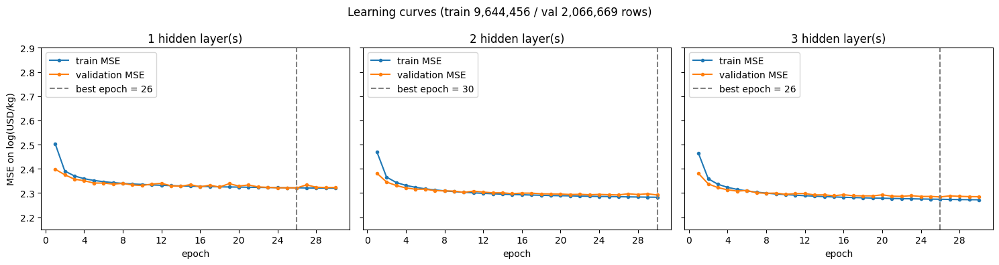
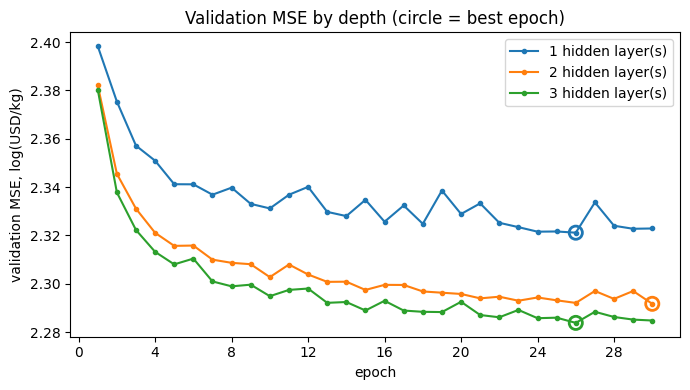
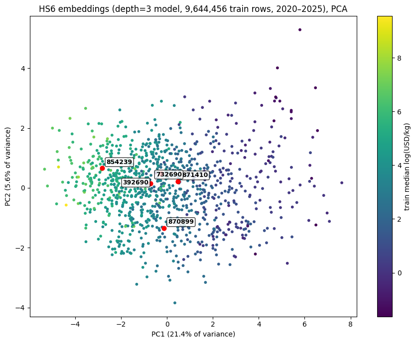

Problem
Every import entering the Philippines requires a declared customs value, which serves as the primary basis for tax assessment. Imports entering the country are declared to the Bureau of Customs (BoC).
Inspecting millions of declarations by hand is laboriously infeasible which leaves room for overlooked misdeclaration and corruption.
Project Goal
Given a product's code, country of origin, month, year and quantity, predict its value per kilogram. The declarations far below the prediction could be flagged for review.
Dataset
We utilized a public dataset, Open Customs Data from BetterGov.
65M
rows in the full dataset
16M
rows sampled (2020–2025)
13.8M
rows after cleaning
Features
| Feature | Description | Encoding | Network inputs |
|---|---|---|---|
| Product code (HS6) | 6-digit international code for the type of product | Learned embedding | 32 |
| Country of origin | Source of manufactured goods | Learned embedding | 8 |
| Month | Month declared (1–12) | \(\sin(2\pi m/12)\) and \(\cos(2\pi m/12)\) | 2 |
| Year | Year declared (2020–2025) | Standardized | 1 |
| Quantity | Number of units declared | \(\ln(1 + \text{quantity})\), then standardized | 1 |
| Missing-value flags | Indicates if quantity unit of measure or preference code was blank | 1 if missing, else 0 | 3 |
| Total | 47 |
Lost leading zeros. Codes found in the dataset that start with 0 are sometimes lost that zero when stored as a number. Codes are padded every code back to 11 digits before keeping the first 6. About 1.5% of rows in our sample have an HS6 code starting with 0.
Target: the natural log (base \(e\)) of the value per kilogram:
Preprocessing
- Kept 2020–2025 due to having cleaner, more updated standards in the values of records.
- Removed rows with zero or negative weight, value or exchange rate, and rows where freight is more than 90% of the declared value.
- Randomly sampled 16M rows from the remaining 2020–2025 records.
- Padded HS codes back to 11 digits for those which lost their leading 0’s and kept the first 6 digits (HS6, internationally recognized code for products). Codes with an invalid chapter (first 2 digits outside 01–97) are kept as a separate INVALID category.
- Kept the 1,000 most common HS6 codes and grouped the rest as RARE (12.3% of rows).
- Merged currency typos (such as US1–US8) into USD, and grouped obsolete country codes (SU, YU, ZR, YD, BU, CS, AN, NT) as OTHER.
- Converted all values to USD: foreign value × exchange rate gives pesos, which is then divided by the median PHP-per-USD rate for that month.
- Split the sample randomly into 70% training, 15% validation, and 15% test
- Used log (ln) transform for appropriate fields (numerical).
- Winsorization was employed to remove severe outliers on both tail ends.
- HS6 codes and other nominal features were index encoded, and later on given random embeddings (final embeddings to be learned by the model)
Methods
We compare three feed-forward neural networks that differ in the number of hidden layers (1,2,3) of 128 ReLU units each. Differences in results would be due to the depth of the network.
1 Hidden Layer
128 neurons
40,233 parameters
2 Hidden Layers
128 neurons each
56,745 parameters
3 Hidden Layers
128 neurons each
73,257 parameters
Network Architecture
- Embeddings: Product codes and countries map to dense vector representations. Similar products end up with similar numbers.
- Hidden layers: Each layer multiplies inputs by weights adds a bias and applies a ReLU activation function. Negative values become zero.
- Output: Single continuous value as the predicted log value per kilogram.
- Training: Utilizes backpropagation with the Adam optimizer. The objective is to minimize mean squared error.
- Early stopping: Retain the model state that achieves the lowest validation error.
Experimental Setup
Data split
| Split | Share | Rows |
|---|---|---|
| Train | 70% | 9,644,456 |
| Validation | 15% | 2,066,669 |
| Test | 15% | 2,066,670 |
All three models follow the split ratio.
Evaluation Metrics
We compare against a baseline that predicts the mean value for all instances.
Hyperparameters
| Setting | Value |
|---|---|
| Neurons per layer | 128 |
| Learning rate | 0.001 (Adam) |
| Batch size | 256 |
| Max epochs | 30 |
| Early stopping patience | 5 epochs |
Results
| Method | Val RMSE | Test RMSE | Test MAE | Test R² | Training time |
|---|---|---|---|---|---|
| Baseline (average) | 2.520 | 2.520 | – | 0.000 | – |
| 1 hidden layer | 1.524 | 1.525 | 1.104 | 0.634 | 48 min |
| 2 hidden layers | 1.514 | 1.516 | 1.090 | 0.638 | 85 min |
| 3 hidden layers | 1.511 | 1.513 | 1.089 | 0.640 | 108 min |
All errors are in \(\ln(\text{USD/kg})\). Val RMSE is from each model's best epoch (the one kept by early stopping). Validation and test scores are almost identical thus models generalize to unseen data.
Test RMSE
All three networks cut the error by about 40% compared to the baseline.
Learning curves

No overfitting as training and validation error stay close together
Validation error by depth

Deeper networks reached a lower validation error. The 3-layer model did best although its lead over the 2-layer model is small. Circles mark the epoch each model was saved at (early stopping).
Small data vs Big data
| Method | RMSE (145k rows) | RMSE (9.6M rows) |
|---|---|---|
| 1 hidden layer | 1.610 | 1.525 |
| 2 hidden layers | 1.613 | 1.516 |
| 3 hidden layers | 1.614 | 1.513 |
The 1-layer model performed best with limited data. The 3-layer model achieved superior performance given a larger dataset.
What the network learned about products

Each data point represents a product code. Expensive products (yellow/green) cluster on the left while inexpensive products (purple) cluster on the right. The network learned this stratification implicitly without explicit price sorting.
Discussion
Baseline Comparison
The type of product explains most of the price. A kilogram of chips costs far more than a kilogram of rice. The embeddings let every network learn a price level for each product.
Network Depth's Impact
The problem exhibits lower complexity once products are embedded. A single layer captures most of the underlying patterns. Additional layers only provide benefits when sufficient data volume is present. With 145k rows the deeper models overfit. With 9.6M rows they possess sufficient examples to learn useful patterns.
Limitations
- We trained each model only once. Minor differences could be attributed to random initialization.
- The data split was randomized rather than chronological.
Future improvements
- Train each model with several random seeds and average the results.
- Try different learning rates and layer sizes.
Conclusion
The project successfully developed three neural networks from scratch to predict the unit value of Philippine imports. All three models reduced prediction error by approximately 40% compared to the mean baseline. The 3-layer network achieved the best performance (RMSE 1.513) but its improvement is slightly better compared to the 1-layer network given its doubled training time. Deeper architectures only demonstrate significant value when trained on massive datasets.
8. References
- BetterGov PH. Open Customs Data. Hugging Face. Link
- Abante, K. (2020). An Open Data Set of Twenty Million Import Transactions from the Bureau of Customs of the Philippines (2012–2019). doi:10.13140/RG.2.2.24053.73444